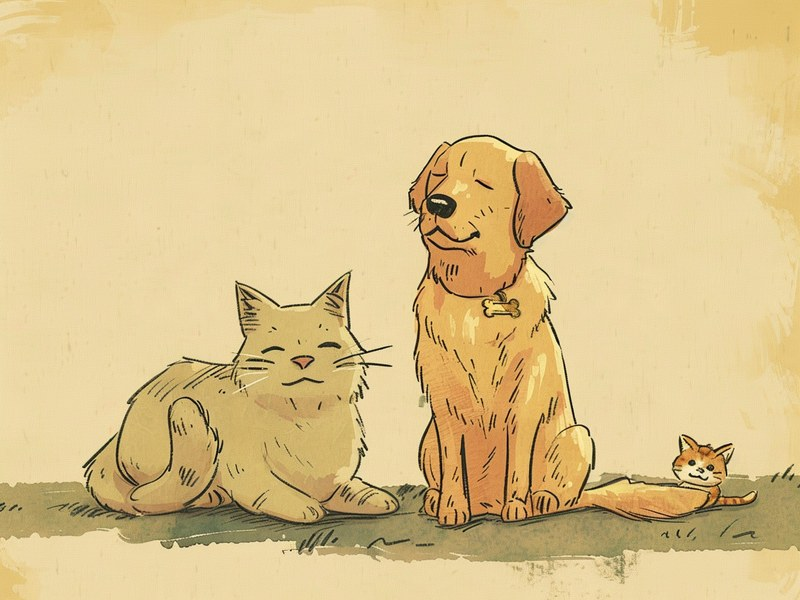

環境省の公式統計を20年分さかのぼると、保護された犬猫が飼い主のもとへ戻るか新しい家族に譲渡される割合は、全国でわずか7.0%から82.5%まで劇的に改善していました。 Japan's official data spanning 20 years shows a dramatic shift: the share of sheltered dogs and cats returned to owners or adopted into new homes rose from just 7.0% to 82.5% nationwide.
環境省の公式統計を20年分さかのぼると、保護された犬猫が飼い主のもとへ戻るか新しい家族に譲渡される割合は、全国でわずか7.0%から82.5%まで劇的に改善していました。
🔍 ちょっと寄り道:動物の行動には理由があるように、人の性格にも傾向があります。気になった方は性格診断(MBTI)も覗いてみてください。
結果:返還・譲渡率は20年で7%→82%に
2004年度、保護された犬猫のうち飼い主のもとに戻るか新しい家族に引き取られたのはわずか7.0%で、残る93%は殺処分されていました。それから20年後の2024年度には、この割合が82.5%まで上昇しています。下のグラフは、この20年間の推移を示したものです。右肩上がりに改善が続き、特に2016年度以降に大きく数字が伸びていることが分かります。
犬と猫で、変化のスピードが違う
犬は2004年度の13.96%から2024年度は88.67%まで、猫は2004年度の1.70%から2024年度は77.60%まで、それぞれ改善しています。もともと猫は野良猫の保護数が多く、譲渡までのハードルも高かったため、犬より低い水準からのスタートでした。それでも20年間で猫は約46倍という、犬以上の伸び幅を見せています。
なぜここまで変わったのか
今回のデータだけで理由を断定することはできませんが、この期間には動物愛護管理法の改正が重なっている点が背景として考えられます。2012年の改正(2013年施行)では、飼い主による終生飼養の原則に反する場合などに自治体が引取りを拒否できるようになり、2019年の改正では所有者不明の犬猫についても安易な引取りを拒否できる規定が加わりました。あわせて、保護団体による譲渡活動の広がりや、飼い主側の意識の変化も、譲渡率の底上げに影響していると考えられます。
出典: 環境省「改正動物愛護管理法の概要」env.go.jp
都道府県ごとの差も大きい
2024年度の都道府県別データ(47都道府県、政令指定都市・中核市の数値は含みません)で見ると、返還・譲渡率が最も高いのは富山県で112.2%でした。100%を超えているのは不自然に見えますが、その年度に引取った数より、前の年度から引き続き保護していた個体の譲渡数の方が多かったためで、異常値ではありません。上位には神奈川・広島・島根・静岡などが並びます。
反対に下位には青森・和歌山・愛媛・兵庫などが並び、最も低い青森県でも34.2%と、全国平均(82.5%)を大きく下回っています。同じ国内でも、地域によって保護活動の体制や譲渡先の確保状況にはまだ大きな差があるようです。
47都道府県すべてのランキングを見る
| 順位 | 都道府県 | 返還・譲渡率 |
|---|
データの出典と算出方法
環境省「犬・猫の引取り及び負傷動物の収容状況」(動物愛護管理行政事務提要より作成)の平成16(2004)年度〜令和6(2024)年度、21年分の全国集計から算出しました。「返還・譲渡率」は、その年度の引取り数に対する返還数+譲渡数の割合(返還・譲渡数÷引取り数×100)としています。都道府県別データは同資料の令和6年度版(都道府県・指定都市・中核市別)から抽出し、47都道府県の合計値は札幌市・仙台市など政令指定都市・中核市を含まない設計のため、全国合計の数字とは一致しません。年度によっては前年度から引き継いだ個体の処分が含まれるため、引取り数と処分数(返還・譲渡数+殺処分数)が厳密には一致しない年もあります。
出典: 環境省「犬・猫の引取り及び負傷動物の収容状況」(env.go.jp)
2004年度の全国の引取り数(犬猫合計)は41万8,413頭でしたが、2024年度には3万9,409頭まで減っています。20年でおよそ10分の1です。譲渡率の改善だけでなく、そもそも保護される数自体が大きく減っていることも、この20年間の変化の大きな特徴です。
ミニクイズ:2004年度時点で、保護された猫が飼い主のもとに戻るか譲渡される割合は約20%だった?(タップして答えを見る)
こたえ×。実際は1.70%と、20%どころか2%にも届いていませんでした。2024年度には77.60%まで上昇しています。